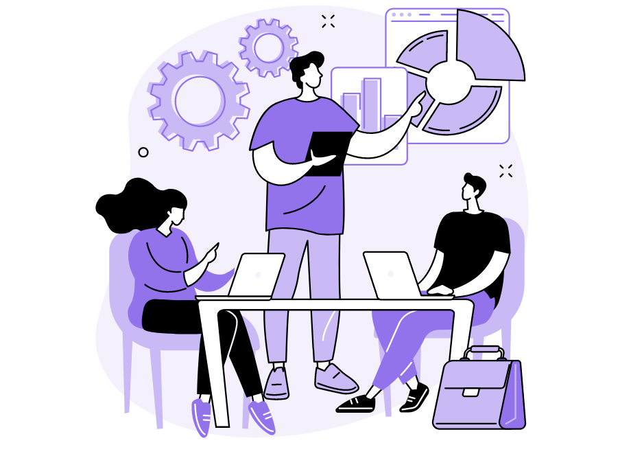

Syllabus
Describe how collaborative work practices between front-end and back-end developers improve the development of a web solution
Learning Intention and Success Criteria
Learning Intention - Students will:
- Understand the importance of collaboration between front-end and back-end developers in creating efficient, high-quality web solutions.
Success Criteria - Students can:
- Explain how communication and shared practices between front-end and back-end developers enhance integration.
- Describe specific ways that collaborative practices improve the overall development process, such as reducing bugs, improving performance, and speeding up iterations.
Content
In web development, front-end and back-end developers play distinct but interconnected roles. Front-end developers focus on building the part of the website that users interact with, while back-end developers ensure that the server, database, and business logic function properly. Collaborative work between these two teams is essential for building efficient, high-performing web solutions. By fostering clear communication, shared responsibilities, and integrated workflows, teams can reduce errors, improve development speed, and deliver a seamless user experience.
Recall
- Front-End Development: Refers to the creation of the user interface (UI) and user experience (UX) that the end-user interacts with directly. It involves languages and technologies like HTML, CSS, JavaScript, and frameworks such as React or Angular.
- Back-End Development: Focuses on server-side logic, databases, APIs, and everything that supports the front-end. Common languages for back-end development include Python, Java, Ruby, and frameworks like Django or Node.js. Back-end development ensures data storage, processing, and application functionality.
Clear Communication
Importance: Clear communication ensures that both teams understand the requirements and constraints of each other’s work.
Examples:
- Front-end developers need to know how data is structured, what APIs are available, and how to handle responses (e.g., data formats like JSON or XML).
- Back-end developers need to understand front-end user experience goals to ensure that server responses are fast, well-structured, and align with the user interface needs.
Best Practices:
- Use collaborative tools like Slack, Microsoft Teams, or Jira for regular updates and issue tracking.
- Create shared documentation for API structures, expected data formats, and error handling to avoid misunderstandings.
Efficient Integration
Importance: Early and continuous collaboration reduces the risk of integration issues, where front-end and back-end components don’t work together as expected.
Examples:
- Aligning on how data is passed between the front-end and back-end—whether through APIs, web services, or server-side rendering—ensures smooth integration.
- For instance, a front-end developer working on a product page needs to know exactly how product data will be delivered (e.g., pagination or filtered results from an API).
Best Practices:
- Front-end and back-end teams should collaborate early in defining API endpoints, agreeing on data formats (e.g., JSON or XML), and setting up testing environments.
- Use API testing tools like Postman or Swagger to ensure smooth interactions between the front-end and back-end components.
Rapid Prototyping
Importance: Working together during prototyping allows both teams to test functionality quickly and make adjustments before full-scale development.
Examples:
- Back-end developers can create early API mocks, which front-end developers can use to build and test UI components without waiting for the full back-end functionality to be completed.
- This approach helps detect issues, such as data inconsistencies or performance bottlenecks, early in the development process.
Best Practices:
- Create a feedback loop where both teams test small features incrementally rather than waiting for full development to be completed.
- Front-end developers can focus on UI functionality and interactivity while back-end developers fine-tune the server-side logic and database queries.
Shared Responsibility
Importance: Both teams must consider how their work impacts overall performance. A slow back-end can result in poor front-end performance, and vice versa.
Examples:
- Front-end developers should minimise unnecessary API calls or overly complex UI components that strain resources.
- Back-end developers must ensure that database queries are optimised and that API responses are lightweight and efficient, reducing server load times.
Best Practices:
- Conduct joint performance reviews to identify areas where performance can be optimised (e.g., reducing API response times, minimising page load times).
- Use performance monitoring tools like Google Lighthouse for front-end and server-side monitoring tools like New Relic for back-end performance.
Problem Solving
Importance: Collaboration allows teams to troubleshoot issues that might involve both the front-end and back-end, leading to faster resolution and a more comprehensive solution.
Examples:
- A performance issue such as slow page loads could be due to inefficient API calls (back-end) or excessive rendering (front-end). By working together, both teams can pinpoint the issue more effectively.
- A front-end bug may seem unrelated to the back-end at first but could be traced to incorrect or delayed data from an API.
Best Practices:
- Conduct joint debugging sessions where both front-end and back-end developers analyse issues together.
- Use error tracking tools like Sentry or LogRocket that capture both front-end and back-end errors, enabling both teams to work off the same set of data.

Sources
Activity
Practical